Maps
Richard White
2020-02-20
maps.RmdWorld map
library(ggplot2) library(data.table) pd <- fhidata::world_map q <- ggplot(mapping = aes(x = long, y = lat, group = group)) q <- q + geom_polygon(data = pd, color = "black", fill="white", size=0.1) q <- q + theme_void() q <- q + coord_map( projection = "cylequalarea", xlim = c(-180,180), ylim = c(-70,90), orientation = c(90,0,0), parameters = list(lat0=90) ) q <- q + labs(title="World map") q <- q + labs(caption="\u00A9 EuroGeographics for the administrative boundaries") q

library(ggplot2) library(data.table) pd <- fhidata::world_map q <- ggplot(mapping = aes(x = long, y = lat, group = group)) q <- q + geom_polygon(data = pd, color = "black", fill = "lightgrey", size=0.1) q <- q + geom_polygon(data = pd[iso3_un195=="DISPUTED"], color = "black", fill="red", size=0.1) q <- q + theme_void() q <- q + coord_map( projection = "cylequalarea", xlim = c(-180,180), ylim = c(-70,90), orientation = c(90,0,0), parameters = list(lat0=90) ) q <- q + labs(title="Disputed areas") q <- q + labs(caption="\u00A9 EuroGeographics for the administrative boundaries") q

European Maps
library(ggplot2) q <- ggplot(mapping = aes(x = long, y = lat, group = group)) q <- q + geom_polygon(data = fhidata::europe_map_nuts0, color = "black", fill = "white", size = 0.2) q <- q + theme_void() q <- q + coord_map( projection = "cylequalarea", xlim = c(-25, 50), ylim = c(31, 75), orientation = c(90, 0, 0), parameters = list(lat0 = 90) ) q <- q + labs(title="NUTS0") q <- q + labs(caption = "\u00A9 EuroGeographics for the administrative boundaries") q
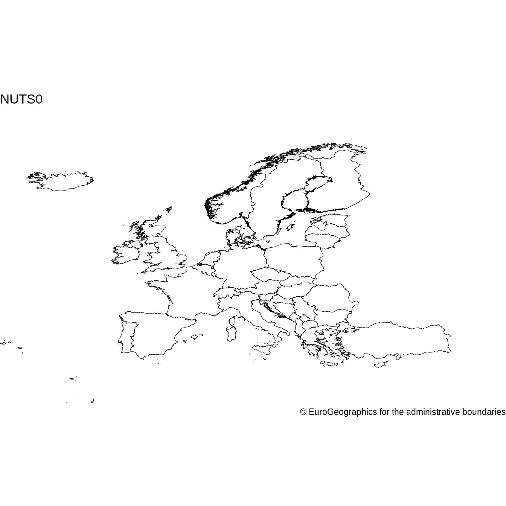
library(ggplot2) q <- ggplot(mapping = aes(x = long, y = lat, group = group)) q <- q + geom_polygon(data = fhidata::europe_map_nuts1, color = "black", fill = "white", size = 0.2) q <- q + theme_void() q <- q + coord_map( projection = "cylequalarea", xlim = c(-25, 50), ylim = c(31, 75), orientation = c(90, 0, 0), parameters = list(lat0 = 90) ) q <- q + labs(title="NUTS1") q <- q + labs(caption = "\u00A9 EuroGeographics for the administrative boundaries") q
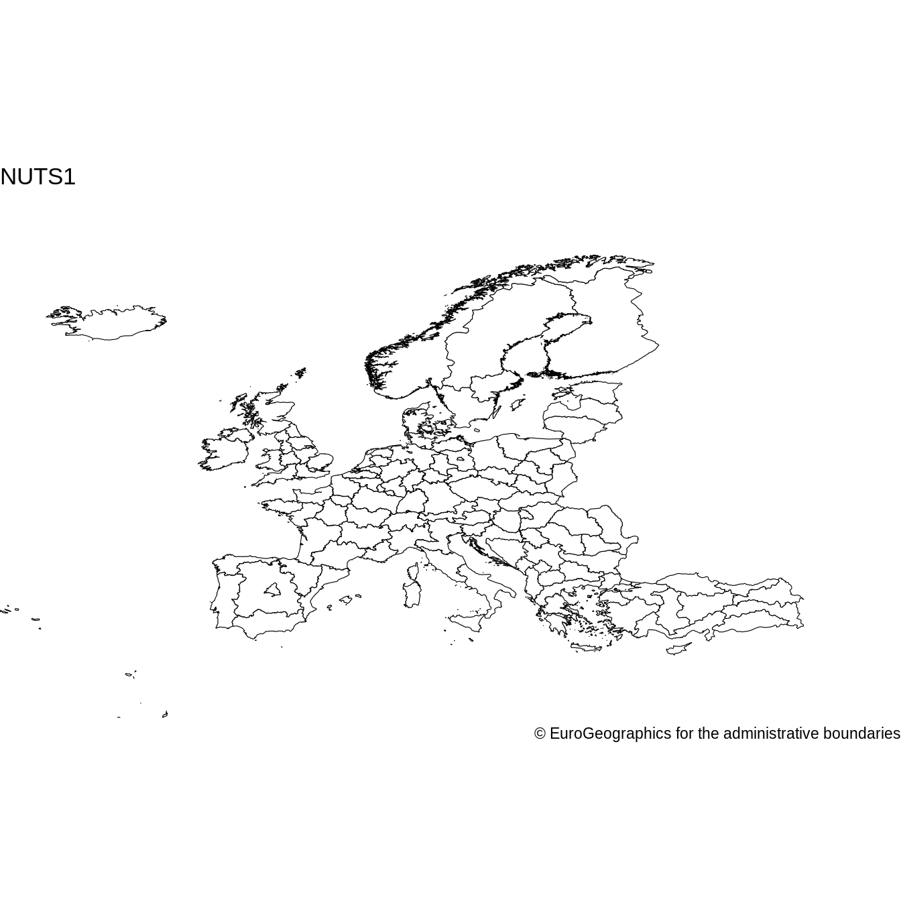
library(ggplot2) q <- ggplot(mapping = aes(x = long, y = lat, group = group)) q <- q + geom_polygon(data = fhidata::europe_map_nuts2, color = "black", fill = "white", size = 0.2) q <- q + theme_void() q <- q + coord_map( projection = "cylequalarea", xlim = c(-25, 50), ylim = c(31, 75), orientation = c(90, 0, 0), parameters = list(lat0 = 90) ) q <- q + labs(title="NUTS2") q <- q + labs(caption = "\u00A9 EuroGeographics for the administrative boundaries") q
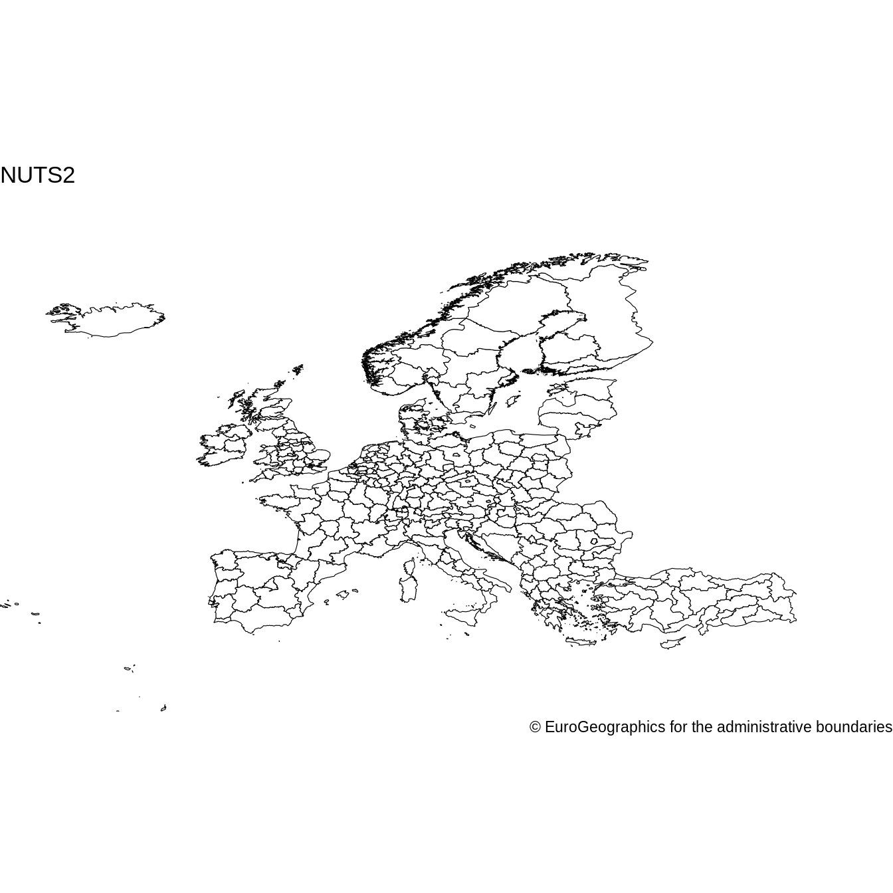
library(ggplot2) q <- ggplot(mapping = aes(x = long, y = lat, group = group)) q <- q + geom_polygon(data = fhidata::europe_map_nuts3, color = "black", fill = "white", size = 0.2) q <- q + theme_void() q <- q + coord_map( projection = "cylequalarea", xlim = c(-25, 50), ylim = c(31, 75), orientation = c(90, 0, 0), parameters = list(lat0 = 90) ) q <- q + labs(title="NUTS3") q <- q + labs(caption = "\u00A9 EuroGeographics for the administrative boundaries") q
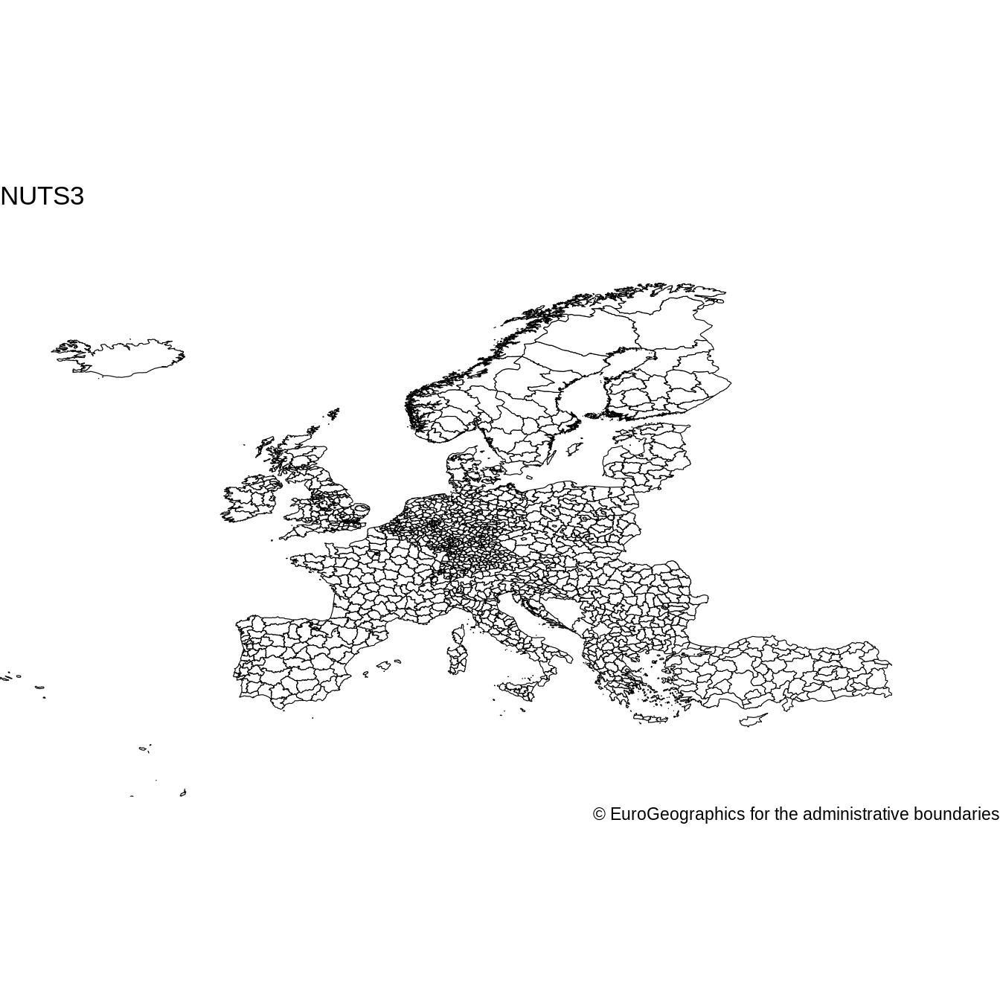
Split Maps Without Inserts
library(ggplot2) library(data.table) pd <- fhidata::norway_map_split_counties_b2020 q <- ggplot() q <- q + geom_polygon(data = pd, aes( x = long, y = lat, group = group, fill=location_code), color="black", size=0.1) q <- q + theme_void() q <- q + coord_quickmap() q <- q + labs(title = "Split map of norwegian counties with 2020 borders and no insert") q
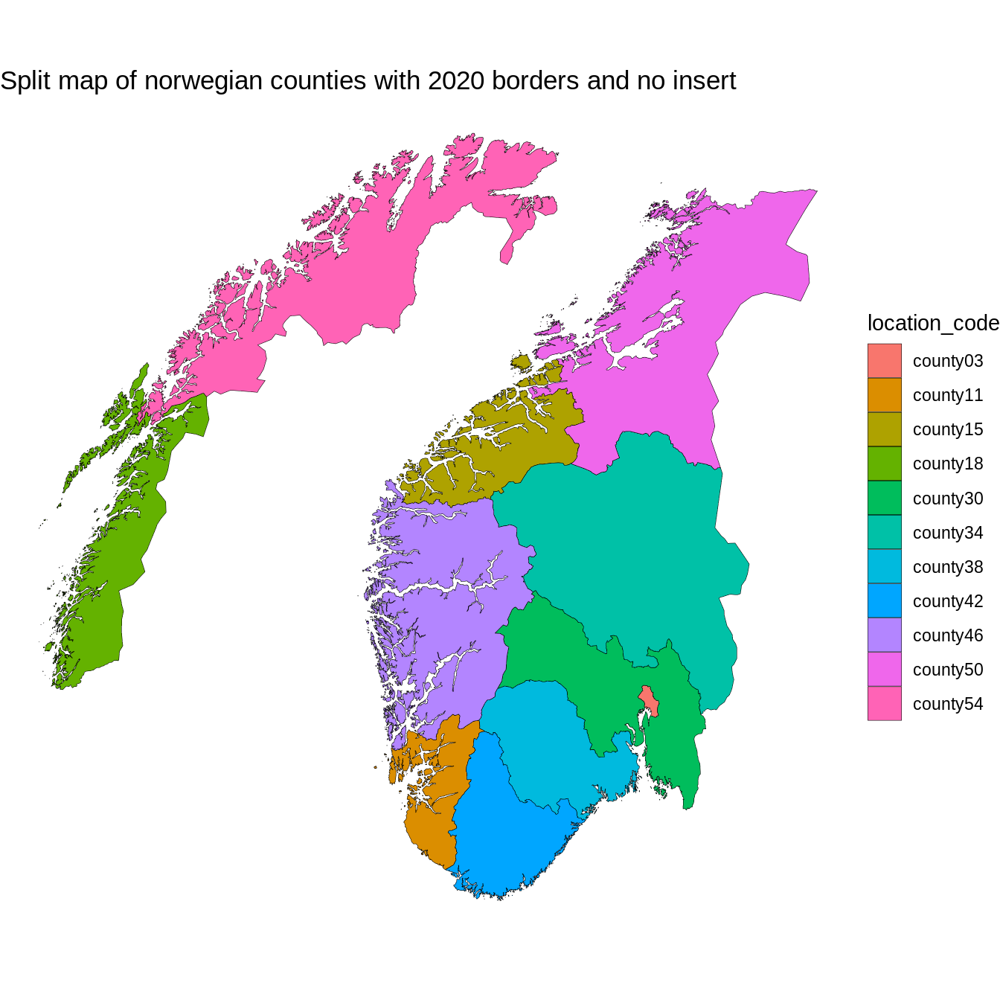
library(ggplot2) library(data.table) pd <- fhidata::norway_map_split_municips_b2020 q <- ggplot() q <- q + geom_polygon(data = pd, aes( x = long, y = lat, group = group), color="black", fill="white", size=0.1) q <- q + theme_void() q <- q + coord_quickmap() q <- q + labs(title = "Split map of norwegian municipalities with 2020 borders and no insert") q
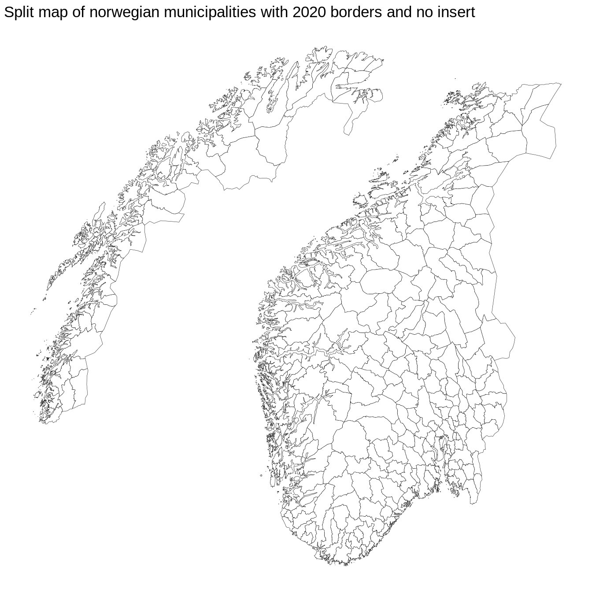
County Maps Without Inserts
library(ggplot2) library(data.table) pd <- fhidata::norway_map_counties_b2020 q <- ggplot() q <- q + geom_polygon(data = pd, aes( x = long, y = lat, group = group, fill=location_code), color="black", size=0.1) q <- q + theme_void() q <- q + coord_quickmap() q <- q + labs(title = "Norwegian counties with 2020 borders and no insert") q
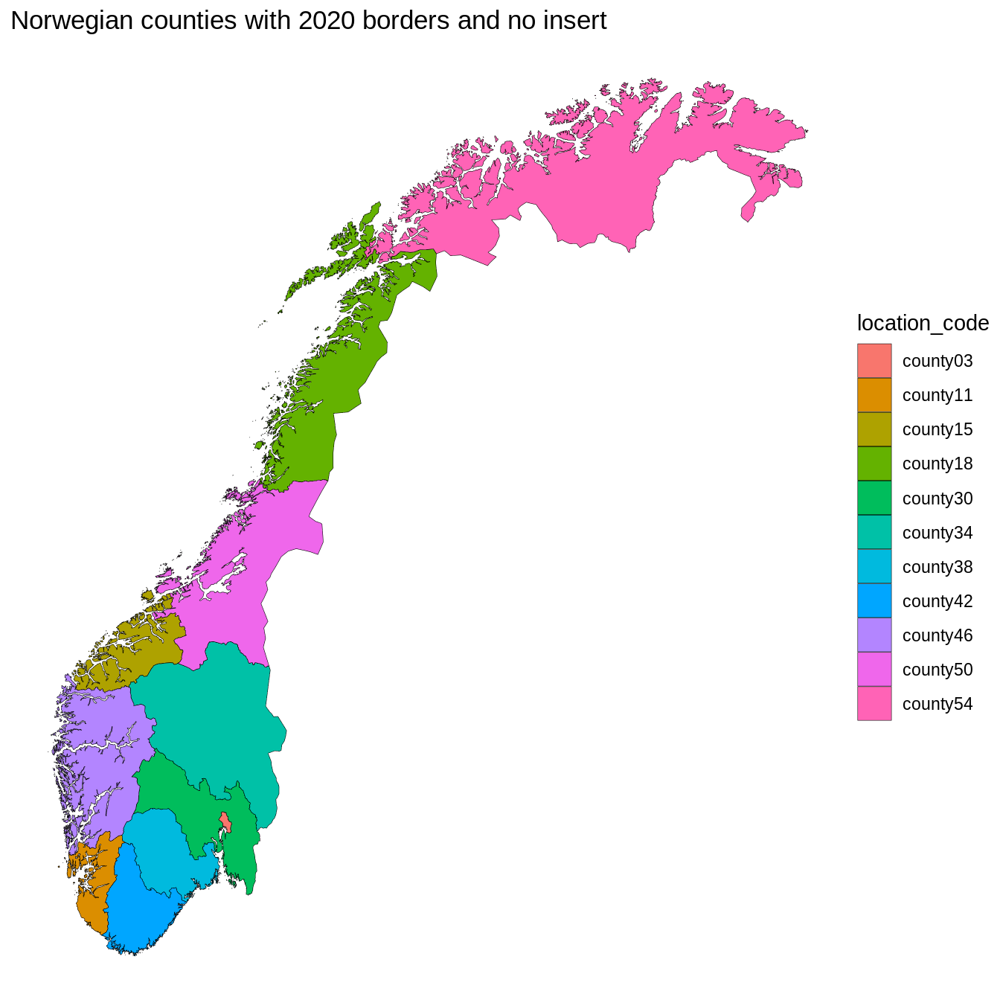
library(ggplot2) library(data.table) pd <- fhidata::norway_map_counties_b2019 q <- ggplot() q <- q + geom_polygon(data = pd, aes( x = long, y = lat, group = group, fill=location_code), color="black", size=0.1) q <- q + theme_void() q <- q + coord_quickmap() q <- q + labs(title = "Norwegian counties with 2019 borders and no insert") q
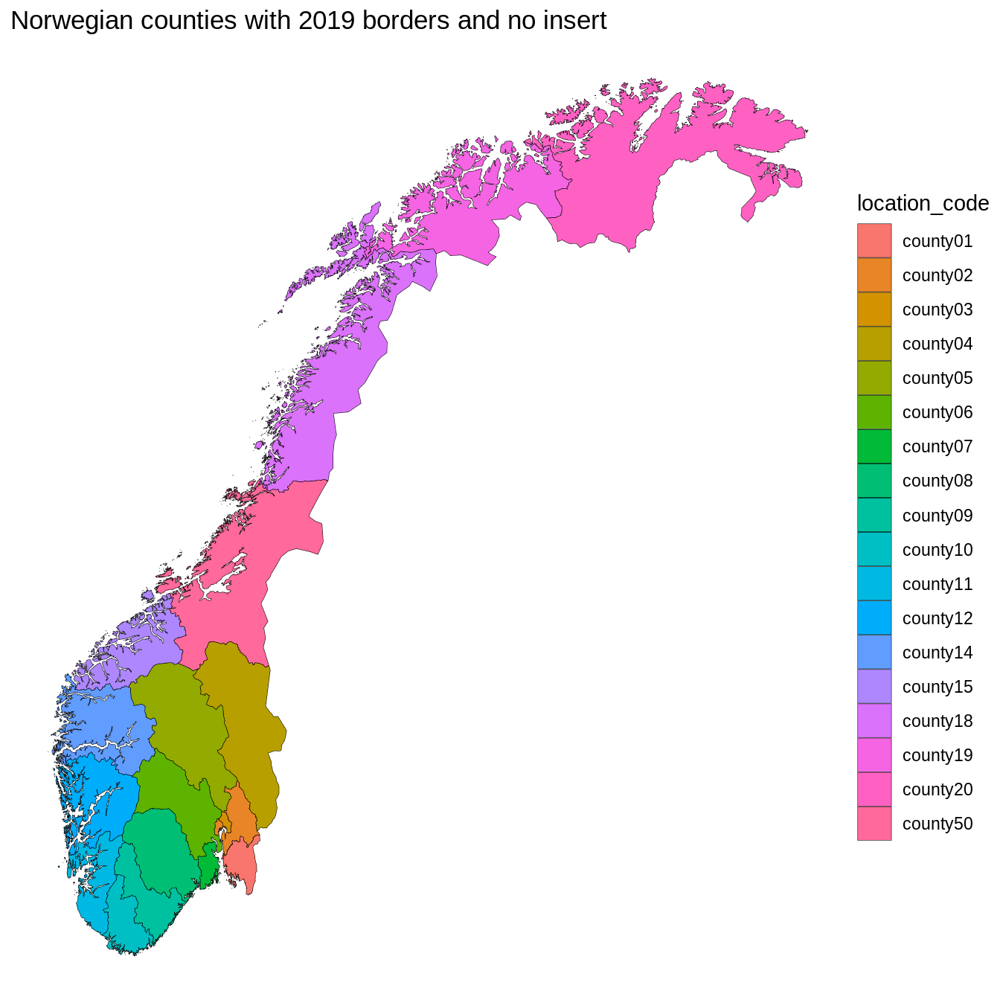
library(ggplot2) library(data.table) pd <- fhidata::norway_map_counties_b2017 q <- ggplot() q <- q + geom_polygon(data = pd, aes( x = long, y = lat, group = group, fill=location_code), color="black", size=0.1) q <- q + theme_void() q <- q + coord_quickmap() q <- q + labs(title = "Norwegian counties with 2017 borders and no insert") q
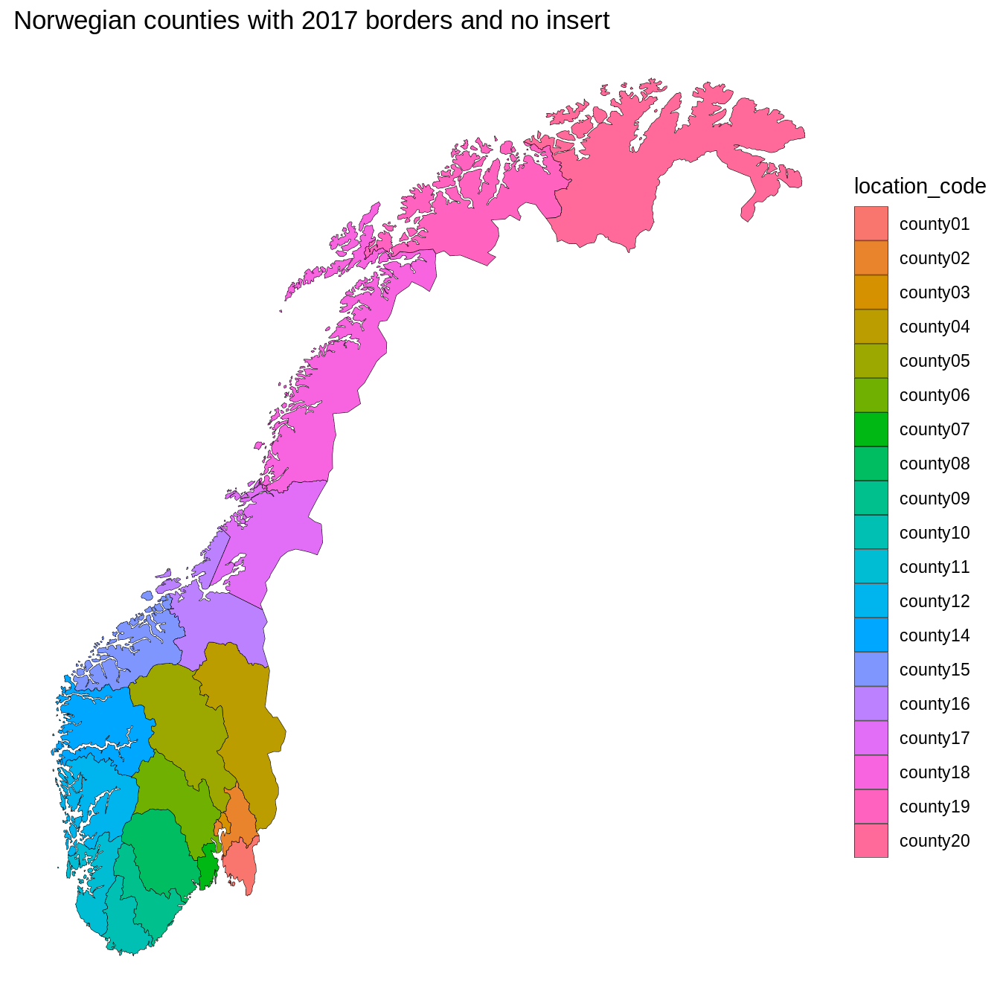
County Maps With Inserts
library(ggplot2) library(data.table) pd <- fhidata::norway_map_counties_with_insert_b2020 q <- ggplot() q <- q + geom_polygon(data = pd, aes( x = long, y = lat, group = group, fill=location_code), color="black", size=0.1) q <- q + annotate( "text", x = fhidata::norway_map_insert_title_position_b2020$long, y = fhidata::norway_map_insert_title_position_b2020$lat, label = "Oslo" ) q <- q + theme_void() q <- q + coord_quickmap() q <- q + labs(title = "Norwegian counties with 2020 borders and an insert for Oslo") q
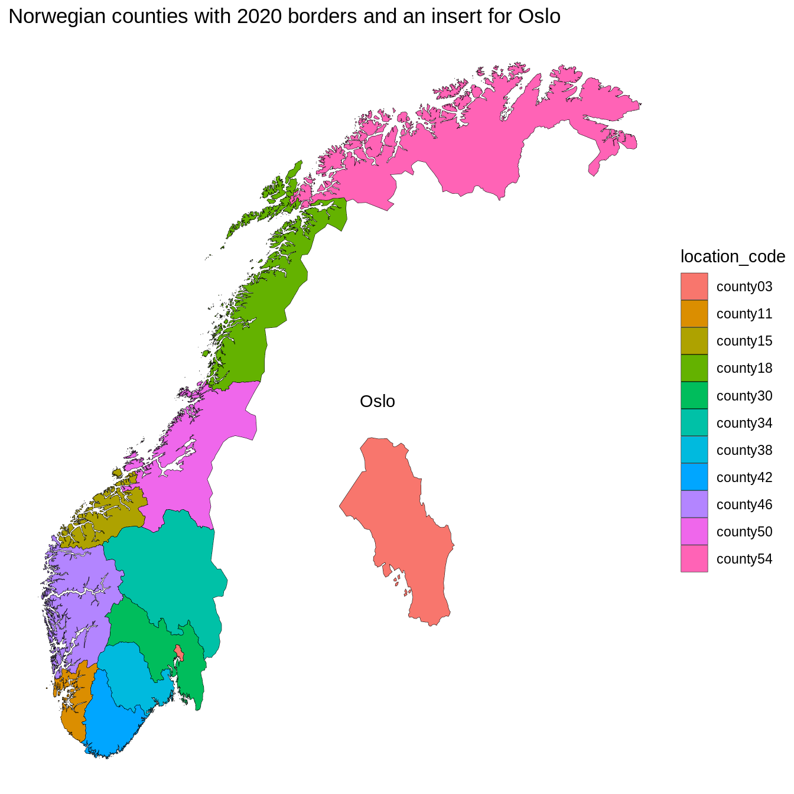
library(ggplot2) library(data.table) pd <- fhidata::norway_map_counties_with_insert_b2019 q <- ggplot() q <- q + geom_polygon(data = pd, aes( x = long, y = lat, group = group, fill=location_code), color="black", size=0.1) q <- q + annotate( "text", x = fhidata::norway_map_insert_title_position_b2019$long, y = fhidata::norway_map_insert_title_position_b2019$lat, label = "Oslo" ) q <- q + theme_void() q <- q + coord_quickmap() q <- q + labs(title = "Norwegian counties with 2019 borders and an insert for Oslo") q
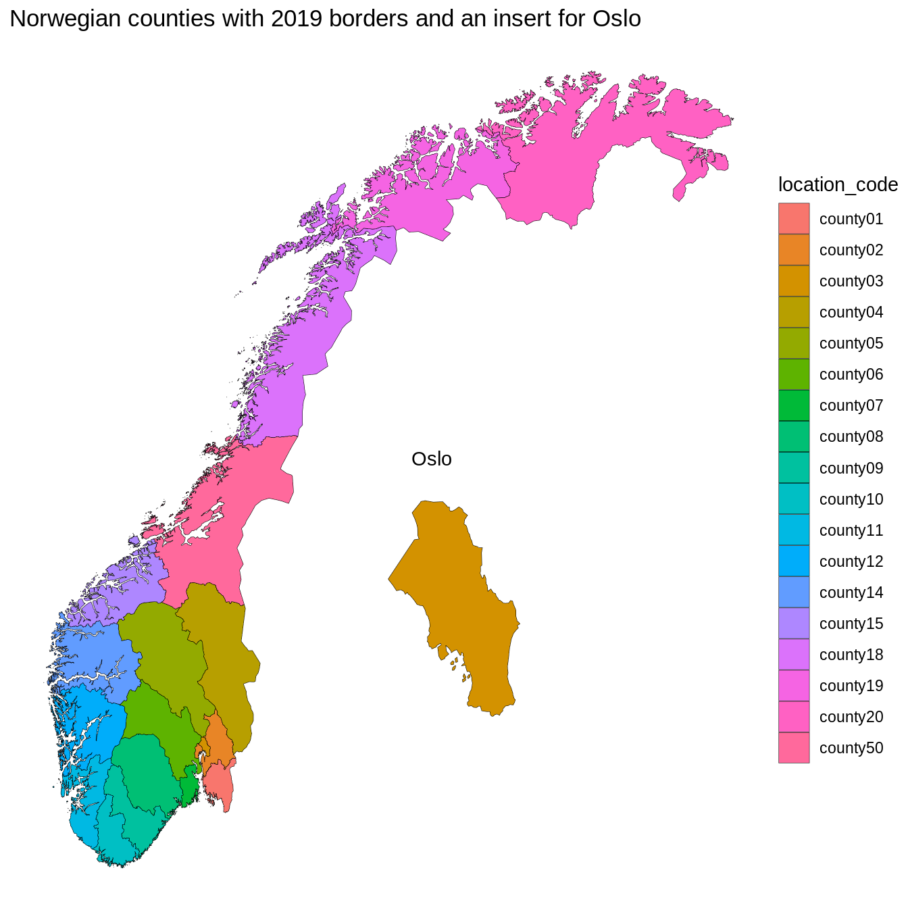
library(ggplot2) library(data.table) pd <- fhidata::norway_map_counties_with_insert_b2017 q <- ggplot() q <- q + geom_polygon(data = pd, aes( x = long, y = lat, group = group, fill=location_code), color="black", size=0.1) q <- q + annotate( "text", x = fhidata::norway_map_insert_title_position_b2017$long, y = fhidata::norway_map_insert_title_position_b2017$lat, label = "Oslo" ) q <- q + theme_void() q <- q + coord_quickmap() q <- q + labs(title = "Norwegian counties with 2017 borders and an insert for Oslo") q
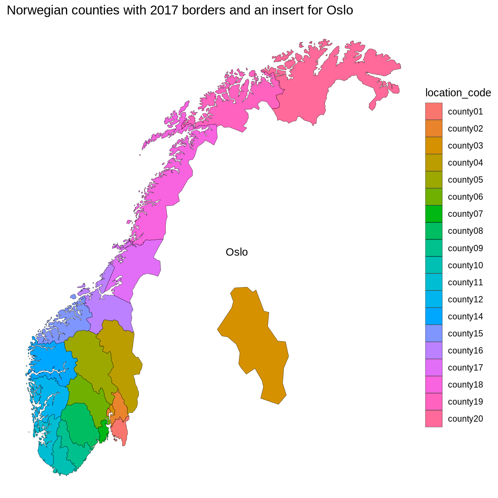
Municipality Maps Without Inserts
library(ggplot2) library(data.table) pd <- fhidata::norway_map_municips_b2020 q <- ggplot() q <- q + geom_polygon(data = pd, aes( x = long, y = lat, group = group), color="black", fill="white", size=0.1) q <- q + theme_void() q <- q + coord_quickmap() q <- q + labs(title = "Norwegian municipalities with 2020 borders and no insert for Oslo") q
library(ggplot2) library(data.table) pd <- fhidata::norway_map_municips_b2019 q <- ggplot() q <- q + geom_polygon(data = pd, aes( x = long, y = lat, group = group), color="black", fill="white", size=0.1) q <- q + theme_void() q <- q + coord_quickmap() q <- q + labs(title = "Norwegian municipalities with 2019 borders and no insert for Oslo") q
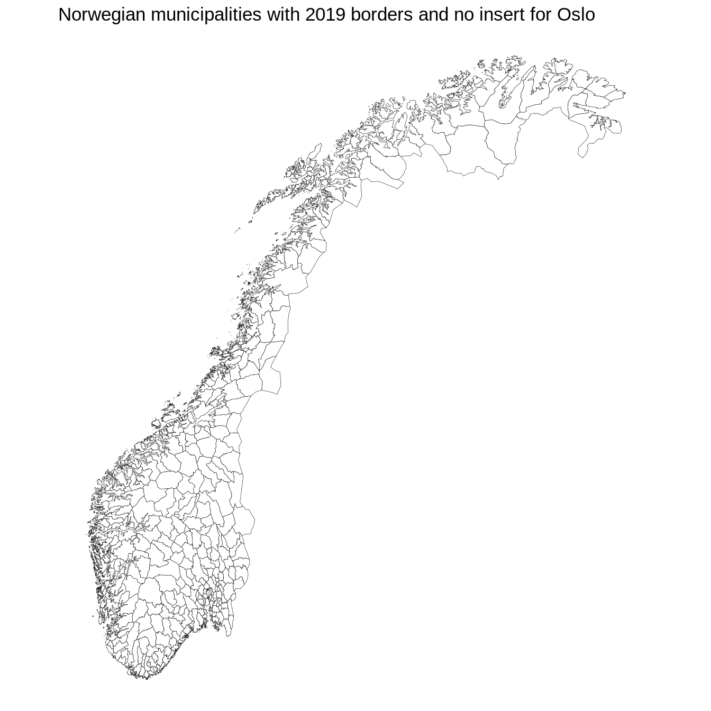
Municipality Maps With Inserts
library(ggplot2) library(data.table) pd <- fhidata::norway_map_municips_with_insert_b2020 q <- ggplot() q <- q + geom_polygon(data = pd, aes( x = long, y = lat, group = group), color="black", fill="white", size=0.1) q <- q + annotate( "text", x = fhidata::norway_map_insert_title_position_b2020$long, y = fhidata::norway_map_insert_title_position_b2020$lat, label = "Oslo" ) q <- q + theme_void() q <- q + coord_quickmap() q <- q + labs(title = "Norwegian municipalities with 2020 borders and an insert for Oslo") q
library(ggplot2) library(data.table) pd <- fhidata::norway_map_municips_with_insert_b2019 q <- ggplot() q <- q + geom_polygon(data = pd, aes( x = long, y = lat, group = group), color="black", fill="white", size=0.1) q <- q + annotate( "text", x = fhidata::norway_map_insert_title_position_b2019$long, y = fhidata::norway_map_insert_title_position_b2019$lat, label = "Oslo" ) q <- q + theme_void() q <- q + coord_quickmap() q <- q + labs(title = "Norwegian municipalities with 2019 borders and an insert for Oslo") q